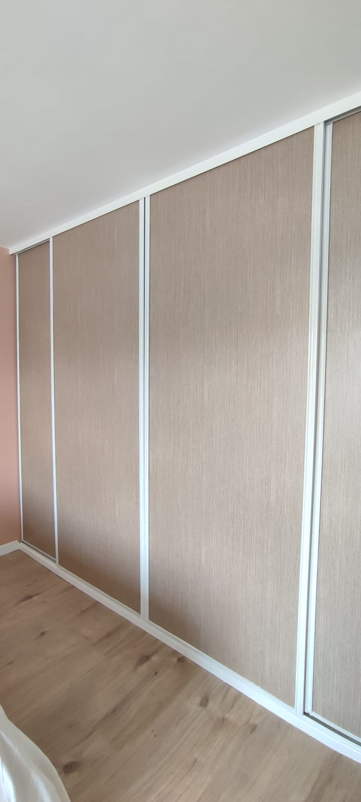
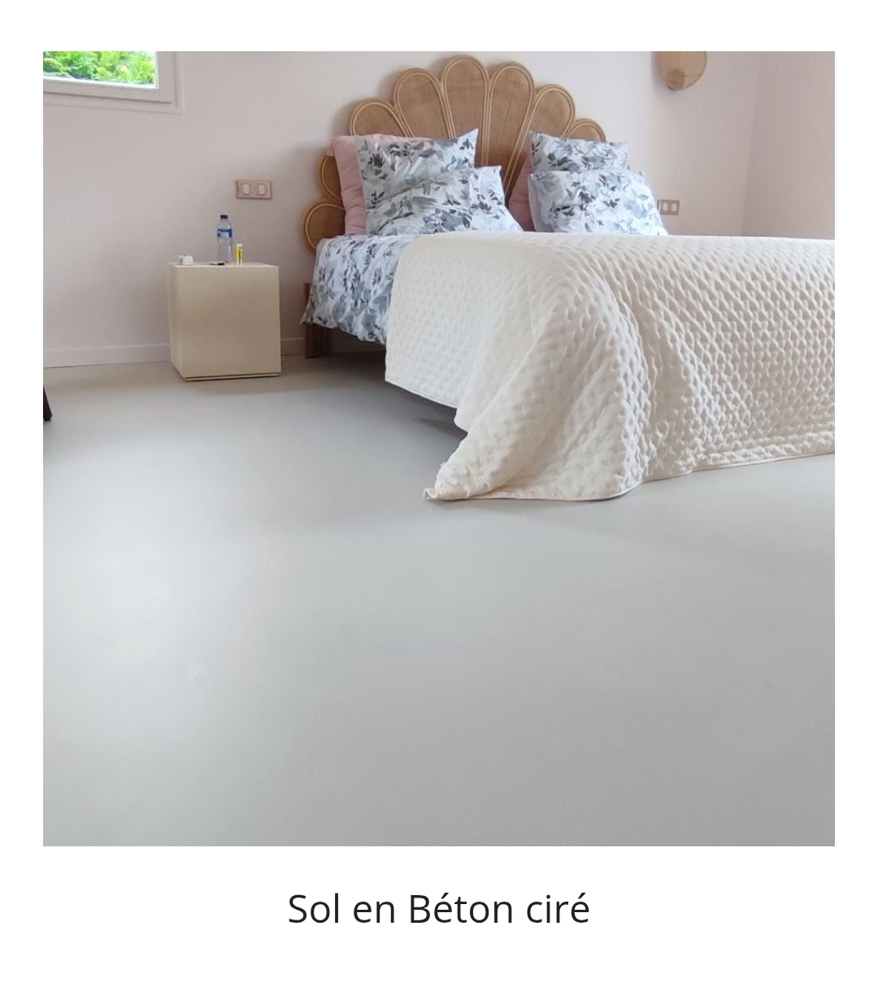
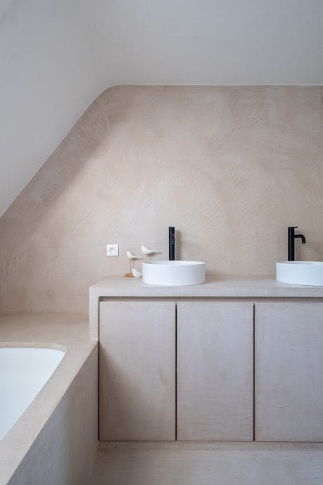
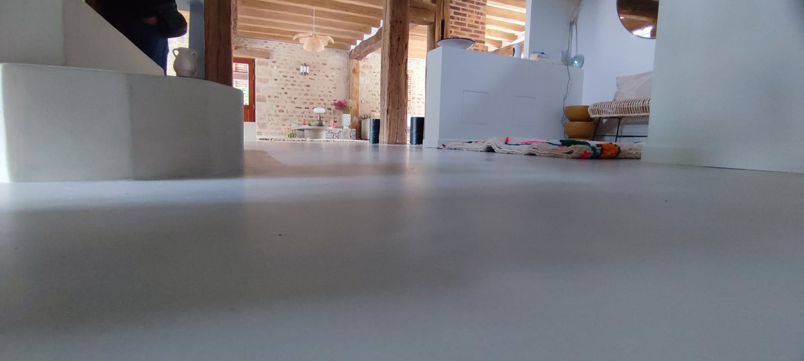
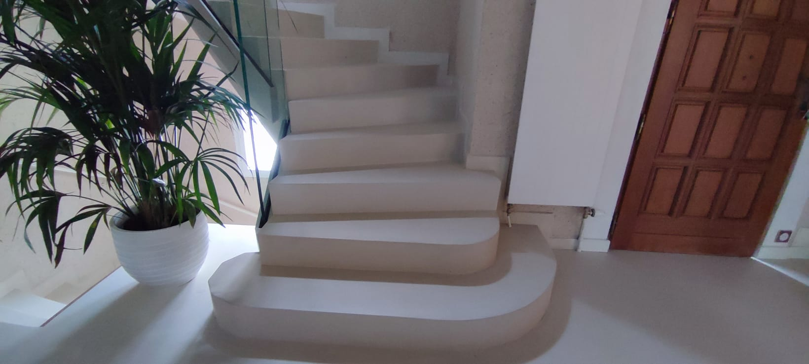
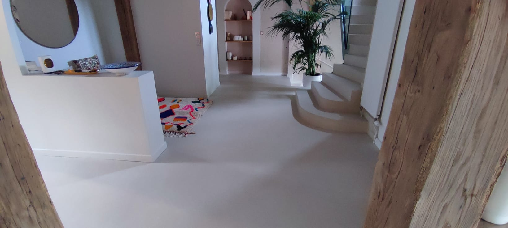
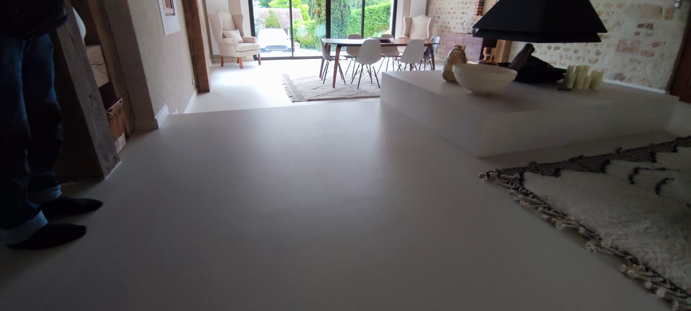
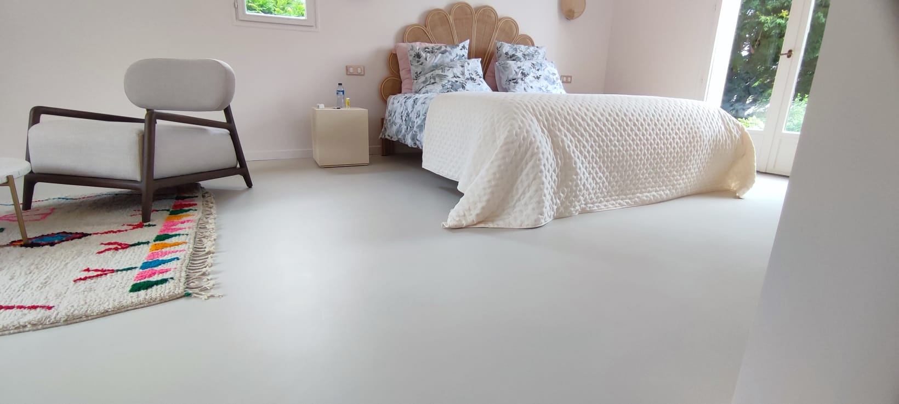
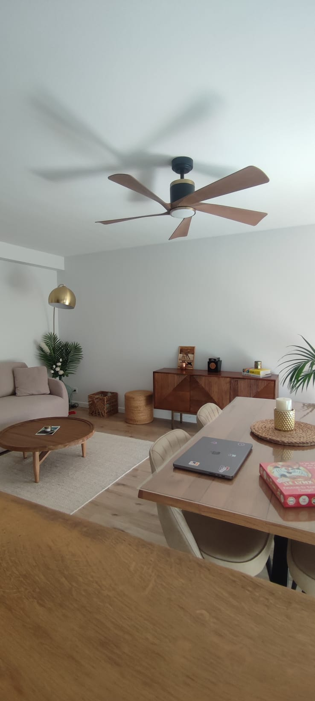

Habillage décoratif de portes coulissantes
Revêtement décoratif pour moderniser les portes sans remplacer le mobilier.
Des finitions soignées et des solutions décoratives pour transformer vos intérieurs à Saint-Maur-des-Fossés et dans le Val-de-Marne.
Demander un devis gratuitBéton ciré, peinture de salle de bains et revêtements architecturaux : découvrez notre savoir-faire.

Revêtement décoratif pour moderniser les portes sans remplacer le mobilier.

Un sol contemporain et harmonieux pour une chambre au style épuré.

Peinture à la chaux sur le mur et sol en béton ciré.

Un revêtement continu qui met en valeur les volumes et le caractère de l’intérieur.

Un rendu minéral et contemporain pour harmoniser l’escalier avec les sols.

Des finitions soignées pour un intérieur lumineux et harmonieux.

Une surface minérale au style sobre et moderne.

Une attention portée aux détails et à la qualité du rendu final.

Des solutions adaptées à chaque intérieur et à chaque projet.
Contactez AREBATOP pour parler de vos travaux et demander votre devis gratuit.
Demander mon devis06 65 73 39 16